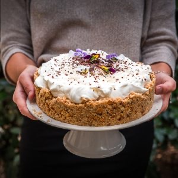

Banoffee pie

Aujourd’hui je vous retrouve avec une recette très très gourmande, celle du banoffe pie!! Vous connaissez?
Si vous connaissez la recette vous savez à quel point un banoffee pie est une pure gourmandise pourtant pas si calorique que ça et je n’ai pas besoin de vous convaincre pour faire la recette! Pour les autres, voici une petite explication sur ce qu’est ce gâteau venu tout droit d’Angleterre.
Ce dessert anglais est composé de bananes, de crème, d’une base constituée de biscuits secs (un peu comme la base d’un cheesecake) et de toffee (du caramel)! A la place du toffee, on utilise souvent du dulce de leche obtenu à partir de lait concentré sucré et ici j’ai décidé de former la base un peu à la façon d’un gros gâteau avec une croûte qui remonte ce qui lui donne des allures encore plus gourmandes (j’ai utilisé la même base que mon cheesecake straciatella) . Vous pourrez trouver des variantes qui utilisent du chocolat, du café ou encore des versions salées. Il paraît que ce dessert est pauvre en calories, je n’ai pas fait le calcul mais je ne m’avancerai pas sur ce point-là!^^ Dans cette recette, la crème peut justement être très calorique si vous décidez de faire une crème fouettée classique. Ici, il s’agit de ma troisième est dernière recette pour la marque Bonneterre et j’ai donc utilisé leur crème de coco pour une version plus « légère » (je vous donnerai les deux possibilités dans le corps de la recette).
Ce que je peux vous dire c’est que mon banoffee pie a fait fureur à la maison!!! Ceux qui ne connaissaient pas se demandaient ce qui pouvait bien y avoir sous cette grosse couche de crème et la découverte des bananes et du caramel a fait son petit effet!! Je regrette d’ailleurs de ne pas avoir pu vous montrer l’intérieur mais je me voyais mal arriver avec un gâteau déjà découpé ce qui aurait abîmé « l’allure » du gâteau!
Je vous laisse découvrir toute la recette plus bas (c’est un peu long mais c’est surtout à cause de la cuisson du dulce de leche sinon c’est très rapide!)! Si vous tentez l’expérience dites-moi ce que vous en avez pensé et en attendant de vous retrouver, je vous souhaite une très belle journée!
Enregistrer
Enregistrer
Enregistrer
Enregistrer
Ingrédients
- Beurre demi-sel - 125g
- Petit beurre - 250g
- Noisettes - 30g
- Lait concentré sucré - 1 boîte de 400g
- Crème de noix de coco (ou crème entière) - 250ml
- Sucre glace - 4 càs
- Mascarpone - 4 càs
- Bananes mûres - 3
- Copeaux de chocolat - Pour la déco
Instructions
- Remplir un grand faitout d'eau
- Mettre la conserve de lait concentré sucré dans le faitout (ne pas ouvrir la conserve!!)
- La conserve de lait concentré sucré doit être entièrement recouverte d'eau
- Porter l'eau à ébullition
- A partir de l’ébullition, laisser cuire 2h15
- Pendant la cuisson vérifier que la conserve soit toujours recouverte d'eau
- A la fin des 2h15, vider l'eau du faitout
- Récupérer la conserve de lait concentré sucré et passez-la sous l'eau froide pour ne pas vous brûler en l'ouvrant
- Ouvrir la boîte de conserve, c'est prêt!!
- Réserver pour plus tard
- Déposer du papier sulfurisé sur une plaque à pâtisserie Comme mon moule n'a pas de fond je pose mon cercle directement sur la plaque à pâtisserie recouverte de papier sulfurisé
- Mixer les biscuits avec les noisettes
- Faire fondre le beurre demi-sel et versez-le sur les biscuits mixés
- Tasser ce mélange au fond de votre moule et faites le remonter sur parois du moule
- Réserver au frais minimum 45 minutes voire 1h
- Couper les bananes en rondelles
- Verser le dulce de leche dans le fond de la tarte
- L'étaler à l'aide d'une cuillère
- Recouvrir la totalité avec des bananes
- Placer au frais pendant le montage de la crème (*vous pouvez préparer le banoffe pie la veille jusqu'à cette étape et monter la crème au moment de servir)
- **Pour vous assurer de monter correctement votre crème : Placer les fouets de votre batteur au congélateur (15 minutes avant de monter la crème) Placer le saladier au congélateur (10-15 minutes avant) ou à défaut de place au frigidaire Placer la crème au congélateur 20 minutes avant de la monter
- Fouetter la crème pour la faire monter
- Quand celle ci commence à s'épaissir, ajouter le sucre glace et le mascarpone
- Fouetter à nouveau pour obtenir un mélange homogène
- Sortir le gâteau du frais et recouvrez-le de crème
- Saupoudrer de copeaux de chocolat (ou de ce que vous voulez!!)
- Placer au frais jusqu'au moment de servir
Les tips de la communauté
Astuces
- le vivement ! J’ai fait fureur ce soir …
- 🙂 Bonne journée!!
Variantes suggérées
- du banoffee pie est juste sublime Steph !! Cette couche de crème appelle les cuillères à venir se plonger dedans !!
Ajustements signalés
- « gras » ou parce que j’ai pris la mauvaise ou tout simplement la malchance de la débutante…;) en tout cas le gout y était quand même et c’était vraiment délicieux<3